flecss
flecss is a minimalist and straightforward (S)CSS framework.
flecss is both a CSS library, and a related SCSS build interface.
It is less granular than Bootstrap or Tailwind. Instead, it provides only highly resuable styles found in the majority of
Anything else is left to individual stylesheets.
📦 flecss ships with a total of103kB, compared to Bootstrap with248kB2.
Integration
ℹ️ Flecss applies a few CSS resets (see _reset.scss).
As usual for a CSS library, styles can be assigned through inbuilt classes. flecss classes introduce a handy all-in-one syntax. A class fundamentally consists of a style identifier <identifier>. An identifier – which is either fully qualified or a related shorthand – depicts the class' purpose (e.g. padding). Without further information, the class fulfills the most generic style (e.g. padding to all sides). Optionally, a specifier _<specifier>, and a space modifier --<modifier> can additionally be declared – in that order. A specifier can be used to specify a certain styling target (e.g. padding only to the top). A (space) modifier – if applicable – changes the effective space property that is related to the style (e.g. the padding size). Valid class names would thus comply with one of the following formats: .<identifier>, .<identifier>_<specifier>, .<identifier>--<modifier> or .<identifier>_<specifier>--<modifier>. The following format is particularly invalid .<identifier>--<modifier>_<specifier>.
Example
SCSS Interface
flecss comes with a mature build interface for SCSS to allow some customisation. Working with flecss on SCSS level furthermore enables custom overrides of the global flecss variables (e.g. --flecss__fontsize--l). In fact, flecss can even be used as a standalone SCSS transpiler.
ℹ️ The flecss build interface bases on the sass transpiler, as well as the clean-css optimiser.
CLI Recommended
| Flag | Description |
|---|---|
--standalone -S |
Build without including flecss. |
--watch -W |
Watch file changes for incremental builds. |
Example
API
Example
Classes
.d .display
The display class allows to toggle binary display conditions. Absence of a display class (specifier) implies the common option, namely simple display.
_disable |
Greyout and disable element for interaction. |
_hide |
Hide element, but keep in layout. |
_collapse |
Hide element, including from layout (bounding box). |
_disable
_hide

_collapse
Example
.f .flex
The flex class represents the key layouting class in flecss – flexbox based (pun intended).
_1 - _5 |
n equal-sized content tiles per row with a homogeneous margin in between. The amount of elements does automatically reduce on smaller viewports.
|
_left |
Two-fold layout growing flexible to the left. On small viewports, the |
_right |
Two-fold layout growing flexible to the right. |
_1
_2
_3
_left
_right
Example
.m .margin
The margin class simply helps with inducing a margin. With a specifier, a certain side can be targeted in isolation.
| default | Margin to all sides. |
_h _horizontal |
Margin to top and bottom side. |
_v _vertical |
Margin to left and right side. |
_t _top |
Margin to top side only. |
_b _bottom |
Margin to bottom side only. |
_l _left |
Margin to left side only. |
_r _right |
Margin to right side only. |
_horizontal
_vertical
_top
_bottom
_left
_right
Example
.p .padding
The padding class simply helps with inducing a margin. It works analogous to the margin class.
| default | Padding to all sides. |
_h _horizontal |
Padding to top and bottom side. |
_v _vertical |
Padding to left and right side. |
_t _top |
Padding to top side only. |
_b _bottom |
Padding to bottom side only. |
_l _left |
Padding to left side only. |
_r _right |
Padding to right side only. |
_horizontal
_vertical
_top
_bottom
_left
_right
Example
.s .section + .w .wrapper
The section and wrapper class are vital to vertical layouting. In fact, each class represents a nestable container. A section stretches across the full width, with a small affixed vertical content padding as a safety area. The wrapper has a limited width and is centered within a section, with an extra large affixed horizontal content padding to separate stacked content. Used in combination, the section-wrapper layouting classes provide a simple yet powerful styling capabilities.
.s .section
.w .wrapper
.section > .wrapper

Example
.t .text
The text class allows to set text alignment. It is particularly with text based content that requires deviant text alignment..
_l _left |
Align text to the left. |
_r _right |
Align text to the right. |
_c _center |
Align text to the center. |
_j _justify |
Align text across the whole width. |
_left

_right
_center
_justify
Alternation of fontsize works through the space modifier interface.
Example
.v .viewport
The viewport class can be used to bind whether to display an element to the current viewport size.
_s _small |
Show on small viewport only. |
_m _medium |
Show on medium viewport only. |
_l _large |
Show on large viewport only. |
_not-s _not-small |
Do not show on small viewport. |
_not-m _not-medium |
Do not show on medium viewport. |
_not-l _not-large |
Do not show on large viewport. |
_large

_not-large

Breakpoints
Breakpoint XL |
--wrapper-width = ~1890px |
Breakpoint L |
--wrapper-width = 1420px |
Breakpoint M |
--wrapper-width = ~945px |
Breakpoint S |
--wrapper-width = 710px |
Breakpoint XS |
--wrapper-width = ~470px |
ℹ️ Breakpoints are not mutable, i.e. overriding
--wrapper-widthdoes not affect the fixed breakpoints.
Example
Space Modifier
The space modifier is quite a new idea in flecss. It allows to alternate the space for class styles built around a space property. For instance, the padding class obviously has a space property to define the padding. The wrapper class, on the other hand, has an inherent padding at the vertical sides.
--xxs --extra-extra-small |
--xs --extra-small |
--s --small |
--m --medium default |
--l --large |
--xl --extra-large |
--xxl --extra-extra-large |
The size of a space unit (e.g. xs) scales progressively aroud the viewport core space unit (--flecss__space--<s|m|l>). It is scaled by a constant factor --flecss__space-factor by the power of the unit (…, s: -1, m = 0, l = 1, xl = 2, …). For instance on large viewports, xl corresponds to --flecss__space--l * --flecss__space-factor^2 – i.e. ~5.35rem by default.
--space-factor |
1.75 |
--flecss__space |
--flecss__space--l (≡ 1.75rem) |
--flecss__space--m (≡ 1.55rem) |
|
--flecss__space--s (≡ 1.55rem) |
Example
SCSS Utilities
The flecss build interface exposes a set of helpful utilities – mixins (mx, flecss_<*>) and functions (flecss-<*>). Those can be used from within custom, non-standalone flecss transpiled SCSS.
mx Breakpoint
The breakpoint mixin wraps styles to be only applied below a respective breakpoint (revisit Breakpoints). By explicitly passing truthy argument, the upper boundary behaviour can be inverted. This is, the mixin wraps styles to be only displayed above a respective breakpoint.
Example
mx Class
The class mixin provides extensibility of a flecss class from a custom class. This way, redundant class statements and inherent verbosity can be avoided. The classifier argument is a full class name string as it would be assigned to elements.
Example
mx Color
The color mixin defines a reusable color including a slightly lighter and a slightly darker shade (10% difference). It can be accessed through the function (fn Color). Optionally, a color to use for dark themes can be given in addition.
Example
mx Font
The font mixin defines a font family from a font file path on disc.
Example
mx Theme
The theme mixin wraps styles for a respective color scheme (system).
Example
fn Color
Read a previously defined color.
fn Fontsize
Get a font size computed through the flecss typical spacing by spacing order (e.g. xl).
The size of a fontsize unit scales progressively aroud the viewport core fontsize unit --m (≡ --fontsize). The behaviour is analogous to those of space through the space modifier.
--fontsize-factor |
1.25 |
--space |
--flecss__fontsize--l (≡ 16px) |
--flecss__fontsize--m (≡ 15px) |
|
--flecss__fontsize--s (≡ 14px) |
Example
Limited line length optimises legibility. For that reason, text container elements (i.e. paragraphs and blockquotes) are furthermore limited in width.
fn Space
Get a flecss space as computed through the space modifier by spacing order (e.g. xs). The second argument set truthy is for negation of the respective space value.